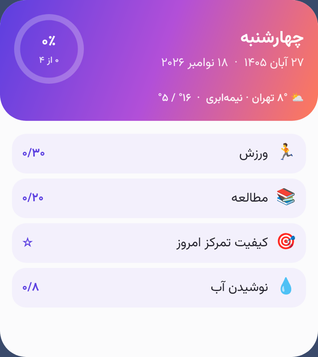
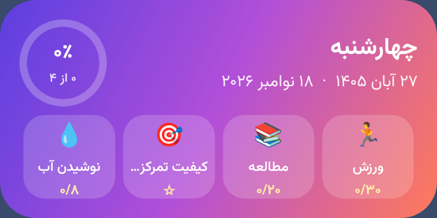
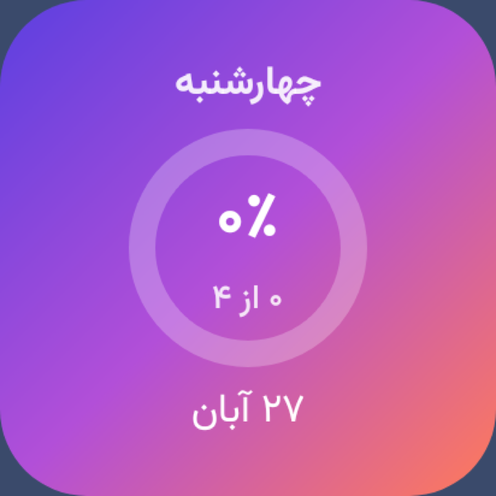
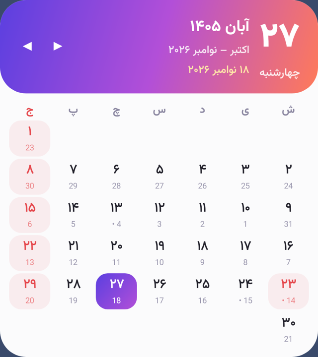
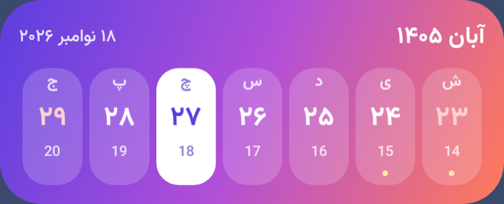
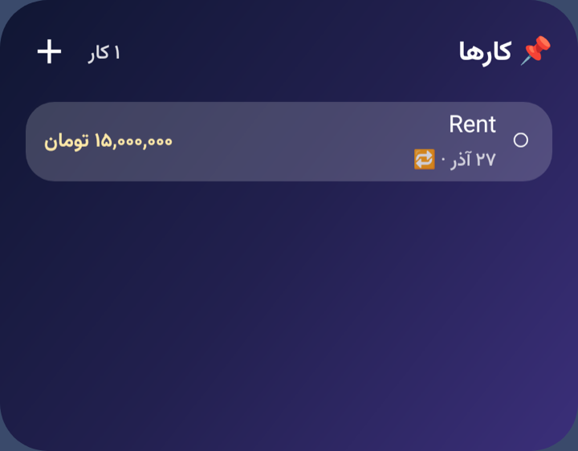
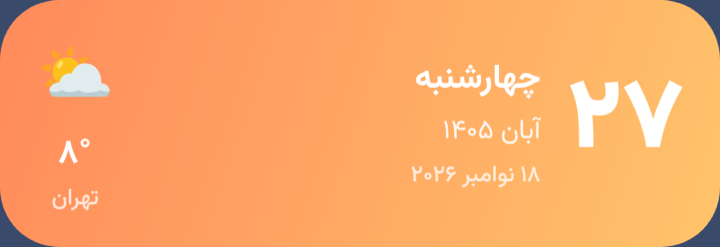
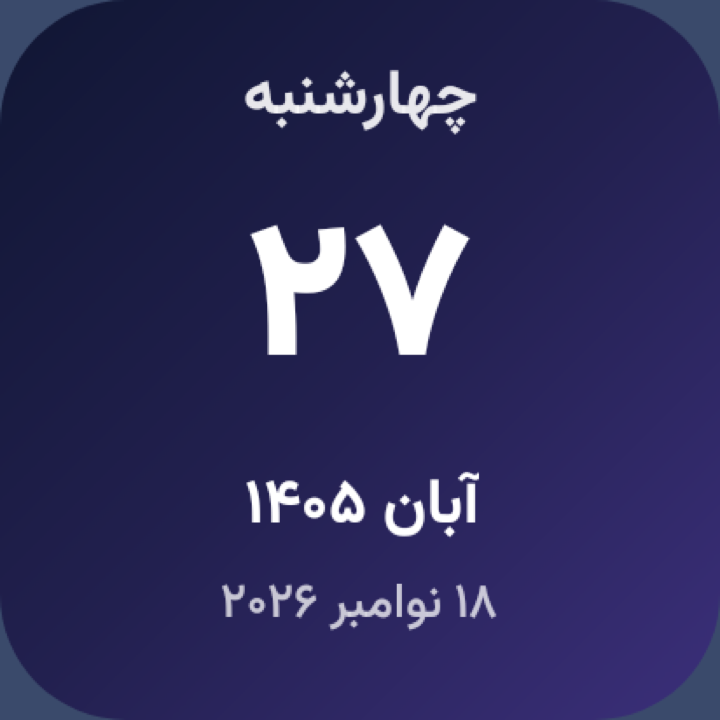

قدم اول
دانلود و نصب
آخرین نسخه را از صفحه دانلود بگیرید.
نصب روی گوشی
- فایل
HeroHabit.apkرا با مرورگر گوشی دانلود کنید (یا از کامپیوتر به گوشی بفرستید، مثلاً در تلگرام). - روی فایل دانلودشده بزنید. اگر پیام «نصب برنامههای ناشناس» آمد، به تنظیمات بروید و برای همان برنامه (مرورگر یا مدیر فایل) گزینه «اجازه از این منبع» را روشن کنید و برگردید.
- نصب را بزنید. اگر Google Play Protect هشدار داد، «جزئیات بیشتر» ← «در هر صورت نصب شود» را انتخاب کنید؛ این هشدار فقط به این دلیل است که برنامه از گوگلپلی نصب نمیشود.
- برنامه «قهرمان» را باز کنید، اسمتان را بنویسید و چند صفحه معرفی کوتاه را ببینید. تمام.
برای اینکه یادآورها جا نمانند
اجازهها و بهینهسازی باتری
- اعلانها: بار اول برنامه اجازه نمایش اعلان میخواهد؛ «اجازه دادن» را بزنید. بدون این اجازه هیچ یادآوری نمیآید.
- آلارم دقیق: برنامه از آلارم خود اندروید استفاده میکند تا یادآور دقیقاً سر ساعت بیاید، حتی وقتی برنامه بسته است یا گوشی خاموشروشن شده.
- باتری: در گوشیهای شیائومی، سامسونگ، هوآوی و اوپو، از تنظیمات ← یادآورها دکمه بهینهسازی باتری را بزنید و «قهرمان» را روی «بدون محدودیت» بگذارید.
- با دکمههای «تست نوتیف» و «تست زنگ» در همان صفحه امتحان کنید؛ ۱۰ ثانیه بعد یادآور میآید، حتی اگر برنامه را ببندید.
نسخه جدید
بهروزرسانی
نسخه جدید را از همین صفحه دانلود کنید و روی نسخه قبلی نصب کنید. اطلاعات شما پاک نمیشود. فقط برنامه را حذف نکنید؛ حذف برنامه همه اطلاعات را پاک میکند، مگر اینکه قبلش پشتیبان گرفته باشید (بخش پشتیبانگیری).
فهرست تغییرات هر نسخه در CHANGELOG است.
شروع
👋 این برنامه چیه؟
«قهرمان» یه دفترچه برنامهریزی شخصی روی گوشیته که سه کار اصلی میکنه: کمکت میکنه عادتهای خوب بسازی (مثل ورزش یا کتاب خوندن)، کارها و قبضها رو سر وقت یادت بندازه، و یه تقویم شمسی کامل با تعطیلات و مناسبتها داشته باشی. همه اطلاعات فقط روی گوشی خودته و به هیچ سروری فرستاده نمیشه.
- تب «امروز»: عادتها و کارهای امروزت.
- تب «کارها»: لیست کارها، قبضها و هزینههای ماه.
- تب «تقویم»: تقویم ماه با تعطیلات و مناسبتها.
- تب «آمار»: ببینی چقدر پیشرفت کردی.
- تب «بیشتر»: بقیه امکانات و تنظیمات.
شروع
🚀 شروع سریع در ۳ دقیقه
اگه حوصله خوندن همه راهنما رو نداری، فقط همین سه قدم رو انجام بده.
- صفحه «امروز» ← تو کادر «عادت جدید» اسم یه کار روزانه رو بنویس (مثلاً «آب خوردن») و دکمه Enter رو بزن. عادت ساخته شد.
- هر وقت انجامش دادی، دایره کنارش رو بزن تا تیک بخوره. همین!
- تب «کارها» ← کادر بالا ← یه کار برای امروز بنویس. برای کاری با تاریخ و یادآور (مثلاً دکتر هفته بعد)، دکمه ⚙️ کنار کادر رو بزن.
شروع
➕ دکمه + و افزودن هوشمند (با تایپ یا صدا)
دکمه گرد + پایین صفحه (در امروز، کارها و تقویم) همه چیز رو از یه جا اضافه میکنه. کافیه یه جمله معمولی بنویسی؛ برنامه خودش تاریخ، ساعت، تکرار، مبلغ و یادآوری رو میفهمه.
- + رو بزن و جملهات رو بنویس. زیرش میبینی برنامه چی فهمیده (تاریخ، ساعت، تکرار، مبلغ…).
- اگه درست بود «ذخیره»، اگه نه «ویرایش جزئیات».
- 🎤 میکروفون: به جای تایپ، بگو (نیاز به تشخیص گفتار گوگل روی گوشی داره).
- کلمههایی که میفهمه: امروز، فردا، پسفردا، شنبه…جمعه، «شنبه بعد»، «۱۵ آذر»، «۳ روز دیگه»، «هفته بعد»؛ «ساعت ۱۰»، «۵ عصر»، «۹:۳۰»؛ «هر روز/هفته/ماه/سال»، «۵ هر ماه»، «هر ۳ روز»؛ «۳ میلیون»، «۴۵۰ هزار تومان»؛ «۳ روز قبل»؛ «با زنگ»؛ «مهم».
- پایین همون صفحه دکمههای سریع هم هست: عادت، کار، قبض و قسط، تولد، یادداشت، پومودورو.
شروع
👆 کشیدن آیتمها و لرزش
برای سریعتر کار کردن، لازم نیست چیزی رو باز کنی.
- عادت یا کار رو به سمت راست بکش ← انجام شد ✅
- به سمت چپ بکش ← عادت: «رد کردن امروز»، کار: «انتقال به فردا»
- با هر تیک یه لرزش ریز حس میکنی؛ وقتی همه عادتهای روز تموم بشه، کاغذرنگی میباره 🎉 (لرزش از تنظیمات خاموش میشه).
شروع
📚 فرق «عادت» و «کار»
عادت چیزیه که میخوای مرتب و تکراری انجام بدی تا جزئی از زندگیت بشه (هر روز ورزش، هر شب مطالعه). کار یه چیز مشخصه که یه بار (یا دورهای) باید انجام بشه و تموم بشه (خرید نون، پرداخت قسط، تمدید بیمه).
- عادتها تو صفحه «امروز» میان و آمار، زنجیره و نمودار دارن.
- کارها تو تب «کارها» میان، تاریخ و ساعت دارن و میتونن تکراری باشن (مثلاً اجاره هر ماه).
عادتها
🏠 صفحه امروز
صفحه اصلی برنامه. هر روز اینجا میبینی چی داری و تیک میزنی.
- بالا: سلام با اسم تو، تاریخ امروز، مناسبت امروز (اگه باشه) و آبوهوای شهرت. علامت ❓ همین راهنماست.
- نوار هفته: ۷ روز هفته. دایره دور هر روز نشون میده چقدر از عادتهای اون روز انجام شده. روی یه روز قبلی بزنی، میتونی برای اون روز هم ثبت کنی (اگه دیروز یادت رفت).
- کارت درصد: چند تا از عادتهای امروز انجام شده.
- کادر «عادت جدید»: فقط اسم بنویس، عادت ساده ساخته میشه. دکمه ⚙️ کنارش: ساخت با همه جزئیات.
- عادتها بر اساس صبح، ظهر، عصر، شب و «هر وقت» گروهبندی شدن.
- روی عادت بزنی ← صفحه آمار و تقویم همون عادت.
- انگشتت رو روی عادت نگه داری ← پنجره ثبت کامل: یادداشت، مقدار دقیق، تایمر، یا «رد کردن» اون روز.
- پایین صفحه: کارهای امروز و انتخاب حال روز با ایموجی.
عادتها
✅ انواع عادت (با مثال)
هر عادتی یه جوری اندازهگیری میشه. موقع ساخت عادت (دکمه ⚙️) نوعش رو انتخاب کن.
- ✔️ تیکی: فقط «انجام شد/نشد». مثال: مسواک، نماز، قرص.
- 🔢 شمارشی: یه عدد هدف داره و با + و − ثبت میکنی. مثال: ۸ لیوان آب، ۲۰ صفحه کتاب، ۱۰ هزار قدم.
- ⏱ زمانی: هدف به دقیقه. با نگه داشتن انگشت روی عادت، تایمر داخلی هم داری. مثال: ۳۰ دقیقه ورزش، ۲۰ دقیقه مطالعه.
- ⭐ امتیازی: هر روز از ۱ تا ۵ ستاره به یه چیز نمره میدی. مثال: کیفیت خواب، میزان تمرکز، رعایت رژیم.
- 🚫 ترک عادت: برای چیزی که میخوای کنار بذاری. پیشفرض موفقی؛ فقط اگه انجامش دادی دکمه «لغزش» رو بزن. مثال: سیگار نکشیدن، شبکههای اجتماعی قبل خواب.
عادتها
🔁 تکرار و زمان روز عادت
لازم نیست هر عادتی هر روز باشه. میتونی مشخص کنی کِیها باید انجام بشه.
- هر روز: پیشفرض.
- روزهای هفته: مثلاً فقط شنبه، دوشنبه و چهارشنبه (برای باشگاه).
- چند بار در هفته: مثلاً ۳ بار؛ هر روزی که خواستی، فقط تا آخر هفته به ۳ برسه.
- هر چند روز: مثلاً هر ۳ روز یه بار آب دادن به گلها.
- روزهای ماه: مثلاً روز ۱ و ۱۵ هر ماه.
- زمان روز (صبح، ظهر، عصر، شب): فقط برای مرتبسازی صفحه امروزه.
عادتها
🔥 زنجیره، رکورد، قدرت عادت و «رد کردن»
اینها عددهاییان که بهت انگیزه میدن و نشون میدن عادت چقدر جا افتاده.
- 🔥 زنجیره: چند روز پشت سر هم انجامش دادی. اگه یه روز انجام ندی، از صفر شروع میشه.
- 🏆 رکورد: بلندترین زنجیرهای که تا حالا داشتی.
- 💪 قدرت عادت (۰ تا ۱۰۰): برخلاف زنجیره، با یه روز غیبت صفر نمیشه؛ کمکم بالا میره و کمکم پایین میاد. عدد بالای ۸۰ یعنی عادت واقعاً جا افتاده.
- ⏭ رد کردن: اگه مریض بودی یا سفر بودی، انگشت رو روی عادت نگه دار ← «رد کردن». اون روز حساب نمیشه و زنجیرهات نمیشکنه.
عادتها
🔗 زنجیره عادت، «هویت» و «چرا»
سه تکنیک معروف عادتسازی که تو فرم ساخت عادت هستن.
- 🔗 زنجیره عادت (بعد از…): عادت جدید رو بچسبون به عادتی که الان داری. مثلاً «بعد از مسواک صبح ← ۲ دقیقه مدیتیشن». وقتی اولی رو تیک بزنی، برنامه یادآوری دومی رو میفرسته.
- 🪪 هویت: یه جمله مثل «من آدم ورزشکاری هستم». وقتی خودت رو اون آدم ببینی، راحتتر ادامه میدی. این جمله تو یادآورها نشون داده میشه.
- 💡 چرا: دلیل خودت رو بنویس (مثلاً «برای اینکه کمردرد نداشته باشم»). تو صفحه عادت و یادآورها میاد.
عادتها
🏁 چالشها و قالبهای آماده
چالش یعنی یه عادت با مدت مشخص؛ مثلاً «۳۰ روز ورزش». بعد از اون مدت تموم میشه و نتیجهات رو میبینی. قالبها هم چند عادت آمادهان که با یه دکمه اضافه میشن.
- صفحه امروز ← دکمه «🏁 چالشها و قالبها» (یا بیشتر ← چالشها).
- یکی رو انتخاب کن (مثلاً «روتین صبحگاهی» یا «۲۱ روز کمتر گوشی») ← «شروع کن».
- تو صفحه امروز کنار عادت نوشته «روز ۵/۳۰».
- وقتی تموم شد، یه کارت نتیجه میاد و میتونی بایگانیاش کنی یا ادامه بدی.
- برای هر عادت خودت هم میتونی تو فرم ساخت، «مدت چالش» بذاری.
کارها و یادآور
📌 کارها و کارهای تکراری (قسط، اجاره)
هر کاری که باید انجام بدی، با تاریخ و ساعت. برای قبض، قسط، اجاره، تمدید بیمه و هر چیزی که دورهای تکرار میشه، «تکرار» رو بذار تا هر بار خودش یادت بندازه.
- تب «کارها» ← کادر بالا: کار سریع برای امروز (فقط اسم).
- دکمه ⚙️ کنار کادر: کار با جزئیات:
- 📅 تاریخ: هر روزی، حتی ماهها بعد.
- ⏰ ساعت یادآوری: سر همون ساعت بهت خبر میده. بدون ساعت، یادآوری جدا نمیاد (فقط تو لیست و نوتیف ثابت دیده میشه).
- 🔁 تکرار: یکبار، هر روز، هر هفته، هر ماه، هر سال یا هر چند روز.
- ⏳ یادآوری زودتر: ۱، ۲، ۳ یا ۷ روز قبل هم یه یادآوری اضافه بیاد.
- 🔔 زنگ: به جای نوتیف معمولی، مثل ساعت زنگ بزنه.
- 💰 مبلغ: برای قبض و قسط (بخش «هزینهها» رو ببین).
- وقتی یه کار تکراری رو تیک بزنی، حذف نمیشه؛ خودش میره روی دفعه بعد (مثلاً ماه بعد).
- کار عقبافتاده قرمز نشون داده میشه.
کارها و یادآور
🔔 یادآورها چطور کار میکنن؟ (مهم)
لازم نیست برنامه باز باشه. یادآورها به سیستم آلارم خود اندروید سپرده میشن؛ حتی اگه برنامه رو کامل ببندی یا گوشی رو خاموشروشن کنی، سر وقت میان.
- دو مدل یادآوری داری:
- نوتیف معمولی: یه اعلان با صدای اعلان گوشی.
- 🔔 زنگ: با صدای آلارم و لرزش؛ تکرار میشه تا «قطع زنگ» رو بزنی. برای کارهای خیلی مهم.
- صدای زنگ، شدت لرزش و «تکرار تا قطع کنم» رو از تنظیمات ← «زنگ هشدار» انتخاب کن (از صداهای آلارم، زنگ و اعلان خود گوشی).
- 🔔 وقتی «زنگ» روشن باشه و گوشی قفل یا خاموش باشه، صفحه روشن میشه و یه صفحه کامل زنگ (مثل ساعت زنگدار) با دکمههای «انجام شد»، «۱۰ دقیقه بعد» و «قطع» میاد. اگه در حال کار با گوشی باشی، بالای صفحه با صدای ممتد میاد.
- تو نوتیف معمولی هم دکمههای «انجام شد ✅»، «۱۰ دقیقه بعد ⏰»، «رد کردن» (عادت) و «فردا» (کار) هست؛ لازم نیست برنامه رو باز کنی.
- اگه یه عادت رو امروز انجام داده باشی، دیگه یادآورش نمیاد.
- خلاصه صبح (امروز چی داری) و «محاسبه شبانه» (امروز چقدر انجام دادی) هر روز میان. ساعتشون یا خاموش کردنشون: تنظیمات ← یادآورهای روزانه.
- با دکمههای تست پایین ببین درست کار میکنه: ۱۰ ثانیه بعد یه نوتیف یا زنگ میاد. میتونی برنامه رو ببندی و صبر کنی.
کارها و یادآور
💰 هزینهها: قبض، قسط، اجاره
اگه برای کارها مبلغ بنویسی، برنامه هر ماه جمع میزنه چقدر پرداخت کردی و چقدر مونده.
- موقع ساخت کار (دکمه ⚙️)، تو «مبلغ به تومان» عدد رو بنویس.
- تب «کارها» ← «هزینهها»: جمع پرداختشده، مونده و عقبافتادهی ماه.
- با «ماه قبل/ماه بعد» ماههای دیگه رو ببین؛ کارهای تکراری (مثلاً اجاره ماهانه) تو ماههای آینده هم حساب میشن.
- وقتی کار رو تیک بزنی، یه «پرداخت» با همون مبلغ و تاریخ ثبت میشه و تو «انجامشده» هم میاد.
- اشتباهی تیک زدی؟ کنار پرداخت 🗑 رو بزن ← «برگردون»: پرداخت پاک میشه و کار دوباره سر موعدش برمیگرده. «فقط حذف» فقط مبلغ رو پاک میکنه.
- هزینهای که کار نبوده (مثلاً تعمیر ماشین یا خرید یهباره): «➕ ثبت هزینه دستی» ← عنوان، مبلغ و تاریخ.
کارها و یادآور
🧭 ماتریس آیزنهاور چیه؟
یه روش معروف برای اولویتبندی که میگه هر کار رو بر اساس دو سؤال تو یکی از ۴ خونه بذار: «مهمه؟» و «فوریه؟». این کمک میکنه وقتت رو صرف کارهای واقعاً مهم کنی، نه فقط کارهایی که عجلهای به نظر میرسن.
- 🔥 مهم و فوری: همین الان انجامش بده (مثل قبضی که امروز مهلتشه).
- 📅 مهم ولی غیرفوری: براش وقت بذار و برنامهریزی کن (مثل ورزش، یادگیری زبان). بیشترین رشد از این خونه میاد.
- 🤝 فوری ولی غیرمهم: اگه میشه بسپارش به کس دیگه یا سریع تمومش کن.
- 🗑 نه مهم نه فوری: شاید اصلاً لازم نباشه انجامش بدی.
- تو فرم کار، «مهم» و «فوری» رو انتخاب کن؛ بعد تب «کارها» ← «ماتریس».
تقویم و اطلاعات
🗓 تقویم، تعطیلات و مناسبتها
تقویم شمسی ماه با معادل میلادی هر روز، تعطیلات رسمی (قرمز) و مناسبتها (نوروز، یلدا، روز معلم، اعیاد، تعطیلات مذهبی و…).
- تب «تقویم»: عدد بزرگ هر خونه تاریخ شمسیه و عدد کوچیک زیرش تاریخ میلادی.
- خونه قرمز = تعطیل (جمعه یا تعطیل رسمی). نقطه نارنجی = مناسبت، صورتی = تولد یا روز مهم خودت، آبی = کار.
- روی هر روز بزن تا صفحه جزئیاتش باز بشه: تاریخ شمسی و میلادی، تعطیلی، مناسبتها، آبوهوا، کارهای اون روز (با دکمه افزودن کار برای همون روز)، عادتها و ژورنال.
- پایین تقویم، لیست همه مناسبتهای اون ماه هست.
- اگه یه تعطیلی مذهبی یه روز با تقویم رسمی فرق داشت: تنظیمات ← «تنظیم تعطیلات مذهبی».
تقویم و اطلاعات
🕒 نمای ماه، هفته، روز و خط زمانی
تقویم سه جور نمایش داره و یه «برنامه ساعتی» برای هر روز.
- بالای تب تقویم: «ماه» (جدول ماه)، «هفته» (۷ کارت با مناسبتها، کارها و عادتهای هر روز)، «روز» (خط زمانی).
- خط زمانی: کارهای ساعتدار، عادتها (بر اساس ساعت یادآور یا زمان روزشون) و داروها به ترتیب ساعت؛ خط قرمز یعنی «الان».
- از صفحه امروز هم با آیکون 🕒 بالای صفحه به برنامه ساعتی امروز میرسی.
تقویم و اطلاعات
🔍 جستجو
یه جا برای پیدا کردن همه چیز.
- آیکون 🔍 بالای صفحه امروز (یا بیشتر ← جستجو).
- تو عادتها، کارها، ژورنال، تولدها، مناسبتهای یک سال آینده و پرداختها میگرده.
تقویم و اطلاعات
🎂 تولدها و روزهای مهم شخصی
تولد خانواده و دوستان، سالگرد ازدواج یا هر تاریخی که هر سال تکرار میشه.
- بیشتر ← «رویدادها و روزهای مهم» ← +.
- عنوان، ماه و روز رو بزن. اگه سالش رو هم بنویسی، سن یا چندمین سالگرد حساب میشه.
- «یادآوری از چند روز قبل» رو تنظیم کن تا وقت خرید کادو داشته باشی.
- تو تقویم با نقطه صورتی و تو صفحه امروز بهصورت «۳ روز دیگه» دیده میشه.
تقویم و اطلاعات
🌤️ آبوهوا
دمای الان و پیشبینی ۷ روزه شهرهایی که خودت انتخاب میکنی (نیاز به اینترنت).
- بیشتر ← آبوهوا ← + ← اسم شهر رو جستجو کن یا از شهرهای آماده انتخاب کن.
- شهر اول «شهر اصلی»ـه و بالای صفحه امروز، تو تقویم و نوتیف ثابت نشون داده میشه. برای عوض کردنش: ⋮ کنار شهر ← «شهر اصلی کن».
- هر ۳۰ دقیقه خودش بهروز میشه؛ دکمه ⟳ برای بهروزرسانی دستی.
تقویم و اطلاعات
📲 نوتیف ثابت و ویجتها
دو راه برای دیدن خلاصه روز بدون باز کردن برنامه.
- 📌 نوتیف ثابت: نوار اعلان رو پایین بکش؛ تاریخ امروز، آبوهوا، چند تا عادت مونده، مناسبت و کارهای امروز (هر کدوم یه خط) رو میبینی. با هر تغییر و نیمهشب خودش بهروز میشه. خاموش کردن: تنظیمات ← «نوتیف ثابت امروز».
- 📱 ویجت امروز: روی صفحه اصلی گوشی جای خالی رو نگه دار ← ابزارکها (Widgets) ← «قهرمان امروز». روی هر عادت تو ویجت بزنی، تیک میخوره.
- 🗓 ویجت تقویم: از همونجا «تقویم قهرمان». با ◀ ▶ ماه عوض میشه، روی اسم ماه بزنی برمیگرده به امروز، روی هر روز بزنی تقویم برنامه باز میشه.








ویجتها با بزرگ و کوچک کردن، خودشان چیدمان مناسب همان اندازه را نشان میدهند. سبک ویجت (رنگی، روشن یا تیره) از تنظیمات عوض میشود.
ابزارها
🍅 پومودورو چیه و چطور استفاده کنم؟
پومودورو (به ایتالیایی یعنی گوجهفرنگی) یه روش ساده و خیلی معروف برای تمرکزه. ایدهاش اینه که به جای اینکه ساعتها پشت هم کار کنی و خسته بشی یا مدام حواست پرت بشه، کارت رو تیکهتیکه کنی: ۲۵ دقیقه فقط و فقط روی یه کار تمرکز کن (گوشی کنار، بدون پیام)، بعد ۵ دقیقه استراحت. به هر تیکه ۲۵ دقیقهای میگن یه «پومودورو». بعد از هر ۴ پومودورو یه استراحت بلندتر (۱۵ دقیقه) بکن. اسمش از تایمر آشپزخونه گوجهایشکلی اومده که مخترعش ازش استفاده میکرد.
- صفحه امروز ← دکمه «🍅 پومودورو» (یا بیشتر ← پومودورو).
- اگه میخوای زمانش به یه عادت اضافه بشه (مثلاً «مطالعه»)، از «ثبت در عادت» انتخابش کن.
- «شروع تمرکز» رو بزن. میتونی برنامه رو ببندی؛ شمارش معکوس تو نوتیف هست.
- وقتی ۲۵ دقیقه تموم شد، نوتیف میاد و دقیقهها خودکار تو عادت ثبت میشن. از تو نوتیف «شروع استراحت» رو بزن.
- اگه وسطش «توقف» بزنی، همون دقیقههایی که کار کردی ثبت میشه.
- زمانها (تمرکز، استراحت کوتاه و بلند) رو پایین همون صفحه میتونی عوض کنی.
ابزارها
🎯 هدفهای بلندمدت
هدفهای بزرگ سال، مثل «۱۲ کتاب امسال» یا «۱۰۰ روز ورزش». برنامه نشون میده جلوتر از برنامهای یا عقب.
- بیشتر ← هدفهای بلندمدت ← +.
- پیشرفت دستی (+۱) یا خودکار: «روزهای انجام یه عادت» (مثلاً تعداد روزهای ورزش) یا «مجموع مقدار یه عادت» (مثلاً مجموع صفحههای خوندهشده).
- خط پیشرفت با گذشت سال مقایسه میشه؛ مثلاً اگه نصف سال گذشته و به ۶ کتاب رسیدی، طبق برنامهای.
ابزارها
📓 ژورنال و حال روز
ژورنال یعنی دفترچه خاطرات کوتاه روزانه. نوشتن چند جمله در روز (چی شد، بابت چی شکرگزاری، چی یاد گرفتی) به آرامش ذهن و شناخت خودت کمک میکنه.
- حال روز: پایین صفحه امروز یکی از ۵ ایموجی رو بزن.
- نوشتن: بیشتر ← ژورنال ← «امروز چطور گذشت؟». سؤالهای آماده (شکرگزاری، بهترین لحظه، درس امروز) کمکت میکنن شروع کنی.
- «سال در پیکسل»: کل سال تو یه جدول که هر خونهاش رنگ حال اون روزه؛ یه نگاه بندازی میفهمی کدوم ماهها حالت بهتر بوده.
- از تقویم هم با زدن روی هر روز، میتونی برای اون روز بنویسی.
ابزارها
📊 آمار و مرور هفتگی
نشونت میده چقدر پیش رفتی و کجا گیر داری.
- تب «آمار»: میانگین ۳۰ روز، روزهای کامل (همه عادتها انجام شده)، نمودار ۷ روز اخیر.
- نمای شبکهای ۲۱ روز: هر ردیف یه عادته و هر خونه یه روز؛ رنگی = انجام شده، قرمز کمرنگ = نشده. یه نگاه بفهمی کدوم عادت ضعیفه.
- حال تو و عادتها: اگه حال روزت رو ثبت کنی، برنامه حساب میکنه کدوم عادتها حالت رو بهتر میکنن (مثلاً «روزهایی که ورزش کردی حالت ۲۰٪ بهتر بوده»).
- رتبهبندی: عادتها به ترتیب قدرت. روی هر کدوم بزنی، تقویم و نمودار ۱۲ هفتهاش رو میبینی.
- مرور هفتگی: مقایسه این هفته با هفته قبل و چند پیشنهاد عملی برای بهتر شدن.
- گزارش PDF ماهانه و خروجی اکسل (CSV): تنظیمات ← گزارش.
ابزارها
🩺 سلامت: دارو، خواب، ورزش
سه دفترچه کوچیک برای سلامتی.
- 💊 دارو: اسم، دوز (مثلاً «۱ قرص بعد غذا») و ساعتهای مصرف رو وارد کن. سر هر ساعت نوتیف با دکمه «خوردم» میاد. درصد مصرف بهموقع ۷ روز اخیر رو هم میبینی. اگه دوره درمان داره، «چند روز» رو پر کن تا بعدش خودش تموم بشه.
- 😴 خواب: هر صبح با + بزن کی خوابیدی و کی بیدار شدی و کیفیتش چطور بود. میانگین و نمودار ۱۴ شب رو میبینی.
- 🏋️ ورزش: اسم حرکت، «ست» (چند دور) و «تکرار» (هر دور چند بار)، وزنه و دقیقه. مثلاً اسکوات ۳ ست × ۱۲ تکرار با ۴۰ کیلو. بیشترین وزنه هر حرکت خودکار رکورد 🏆 میشه.
ابزارها
🐣 همراه، سطح و نشانها
یه بخش سرگرمکننده برای انگیزه بیشتر؛ اگه نمیخوای، از تنظیمات مخفیاش کن.
- امتیاز تجربه (XP): هر عادت +۱۰، هر کار +۵، هر روز ژورنال +۵. با جمع شدن امتیاز، سطحت بالا میره.
- همراه (ستاره): با سطحت بزرگ میشه (تخم ← نوزاد ← کوچولو ← قهرمان ← افسانه). حالش به کارهای امروزت بستگی داره؛ اگه چند روز سر نزنی، دلتنگ میشه. اسم، رنگ و لباسش رو خودت انتخاب میکنی.
- نشانها: برای زنجیره ۷، ۲۱، ۶۶ و ۱۰۰ روزه، ۱۰۰ ثبت، روز کامل و… داده میشن.
تنظیمات و امنیت
🎨 تمها، رنگها، چیدمان و میانبرها
برنامه رو به سلیقه خودت دربیار.
- تنظیمات ← ظاهر: روشن/تیره، رنگ برنامه (بنفش، اقیانوس، جنگل، غروب، شب مشکی کامل) یا «از رنگ والپیپر» (اندروید ۱۲ به بعد).
- ظاهر ویجتها: گرادیان رنگ برنامه، شیشهای، مشکی، یا رنگ ساعت روز.
- چیدمان صفحه امروز: ترتیب بخشها رو عوض کن یا هر کدوم رو مخفی کن.
- آیکونهای خطی و لرزش با هر تیک رو هم همونجا روشن/خاموش کن.
- میانبر: آیکون برنامه رو روی صفحه گوشی نگه دار ← افزودن سریع، عادت جدید، پومودورو، تقویم.
- منوی کشویی بالای گوشی (Quick Settings): ✏️ رو بزن ← «کار جدید» و «پومودورو» رو به دکمهها اضافه کن.
- تو تبلت یا گوشیهای تاشو، منو بهصورت ستونی کنار صفحه میاد.
تنظیمات و امنیت
✨ حالت ساده
اگه بیشتر امکانات رو نمیخوای و فقط عادتها، کارها، یادآور و تقویم برات مهمه.
- تنظیمات ← «حالت ساده» رو روشن کن.
- تب آمار و بخشهای سلامت، پومودورو، چالشها، همراه و نشانها مخفی میشن.
- هیچ اطلاعاتی پاک نمیشه؛ هر وقت خاموشش کنی، همه چیز برمیگرده.
تنظیمات و امنیت
🗂 ویرایش، توقف موقت و حذف عادت
مدیریت عادتها و گروهبندیشون.
- ویرایش: روی عادت بزن ← ✏️ بالای صفحه.
- بایگانی (توقف موقت): روی عادت بزن ← 🗄. از لیست امروز حذف میشه ولی سوابقش میمونه. برای برگردوندن: بیشتر ← مدیریت عادتها ← بایگانی ← بازگردانی.
- حذف کامل: روی عادت بزن ← 🗑 (همه سوابقش پاک میشه).
- گروهها (مثل «سلامتی» یا «کار»): بیشتر ← مدیریت عادتها. تو صفحه امروز میتونی با گروهها فیلتر کنی.
- ترتیب: تو همون صفحه با فلشهای بالا/پایین.
تنظیمات و امنیت
💾 پشتیبانگیری و انتقال به گوشی جدید
همه اطلاعات فقط روی همین گوشیه؛ اگه گوشی گم بشه یا برنامه پاک بشه، بدون پشتیبان از دست میره.
- پشتیبان خودکار (پیشنهادی): تنظیمات ← «انتخاب پوشه پشتیبان خودکار» ← یه پوشه انتخاب کن. هر روز خودش یه نسخه میگیره و ۷ نسخه آخر رو نگه میداره. اگه پوشهای از Google Drive انتخاب کنی، روی ابر هم ذخیره میشه.
- پشتیبان دستی: تنظیمات ← «خروجی گرفتن» ← یه فایل ذخیره کن (مثلاً تو تلگرام برای خودت بفرست).
- انتقال به گوشی جدید: برنامه رو نصب کن ← تنظیمات ← «بازیابی از فایل» ← فایل پشتیبان رو انتخاب کن.
تنظیمات و امنیت
🔒 قفل برنامه
اگه نمیخوای کسی ژورنال یا کارهات رو ببینه.
- تنظیمات ← حریم خصوصی ← «قفل با اثر انگشت / رمز گوشی».
- اگه بیشتر از ۳۰ ثانیه از برنامه بیرون باشی، موقع برگشت اثر انگشت یا رمز گوشی میخواد.
- اول باید رو خود گوشی اثر انگشت یا قفل صفحه تنظیم شده باشه.
سؤالها
🙋 سؤالهای رایج
جواب سؤالهایی که معمولاً پیش میاد.
یادآورم نیومد!
بخش «یادآورها چطور کار میکنن» رو ببین: بهینهسازی باتری رو خاموش کن، اجازه آلارم دقیق رو بده و با «تست نوتیف» امتحان کن. همچنین مطمئن شو برای کار «ساعت یادآوری» گذاشتی.
دیروز یادم رفت تیک بزنم.
تو نوار هفته صفحه امروز روی دیروز بزن و تیک بزن.
یه عادت رو اشتباهی تیک زدم.
دوباره روی دایره بزن تا برداشته بشه (یا انگشت رو نگه دار ← پاک کردن).
یه کار یا قبض رو اشتباهی «انجام شد» زدم.
کارها ← «انجامشده» ← «↩ برگردون». کار تکراری هم به موعد قبلیش برمیگرده و پرداختش پاک میشه.
مسافرت/مریض بودم، زنجیرهام میشکنه؟
نه، اگه اون روزها رو «رد کردن» بزنی.
کار تکراری رو چطور کلاً حذف کنم؟
روی کار بزن ← «حذف».
نوتیف ثابت رو نمیخوام.
تنظیمات ← «نوتیف ثابت امروز» رو خاموش کن.
آبوهوا نمیاد.
به اینترنت نیاز داره؛ بیشتر ← آبوهوا ← ⟳.
برنامه رو پاک کنم اطلاعاتم میره؟
بله، مگه اینکه پشتیبان گرفته باشی.
سؤالها
💡 ۷ نکته طلایی عادتسازی
خلاصه چیزهایی که تحقیقات درباره ساختن عادت میگن.
- خیلی کوچیک شروع کن: نسخه ۲ دقیقهای عادت (به جای «ورزش» بگو «کفش ورزشی رو بپوش»).
- همه رو با هم شروع نکن: ۲ تا ۳ عادت کافیه؛ وقتی جا افتادن، بعدی رو اضافه کن.
- ساعت و جای ثابت: «ساعت ۷ صبح بعد از صبحانه» خیلی بهتر از «یه وقتی تو روز» جواب میده.
- بچسبونش به یه عادت قدیمی (زنجیره عادت 🔗).
- دو روز پشت سر هم ول نکن: یه روز غیبت اشکالی نداره، دو روز شروع ترک عادته.
- محیط رو آماده کن: کتاب رو بذار رو بالش، گوشی رو شب بیرون اتاق.
- پیشرفتت رو ببین: آمار و زنجیرهها برای همینن؛ هر هفته «مرور هفتگی» رو نگاه کن.